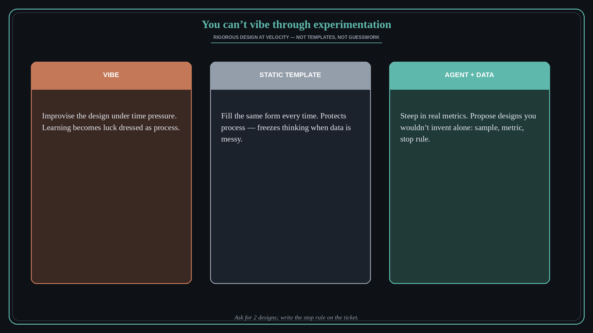

You can’t vibe through experimentation
Source: George / prodmgmt.world (@nurijanian)
original post
What it claims
You can’t vibe your way through experimentation — but velocity also means you can’t keep filling out static templates. Give an agent an /experiment-design skill, let it steep in real data, and have it propose experimental designs you wouldn’t think of on your own.
Why it matters for a PO
A/B and discovery experiments fail when design is improvised under time pressure — or when process templates freeze thinking. Agent-assisted design grounded in real metrics is the middle path: rigorous enough to trust, fast enough to ship.
3 takeaways
- Vibe-based experiment design is luck dressed as learning.
- Static templates protect process, not insight — they stall when the data is messy.
- Agent + real metrics can surface designs (sample, primary metric, guardrails, stop rule) you would miss alone.
Practice this week
Take one live bet. Feed the agent the last 3 months of relevant metrics plus the hypothesis. Ask for 2 alternative experimental designs (sample, primary metric, guardrails, stop rule). Pick one; write the stop rule on the ticket.